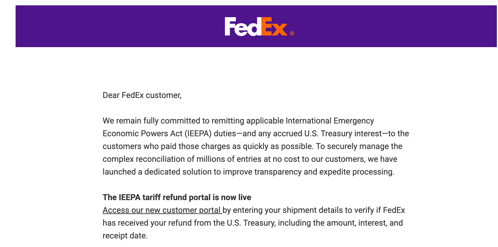
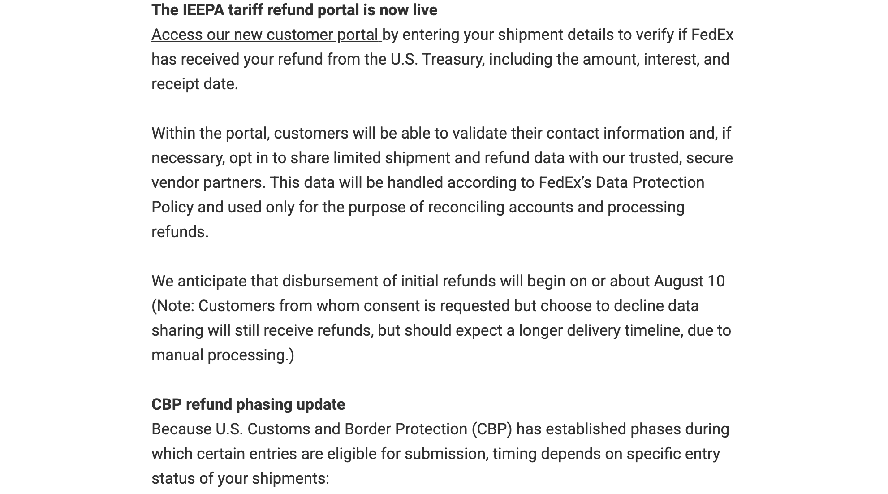
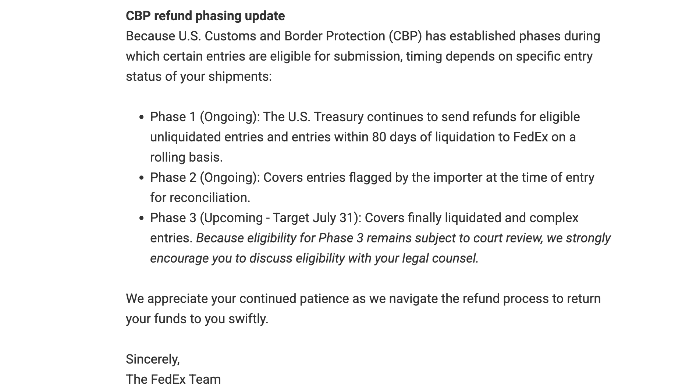
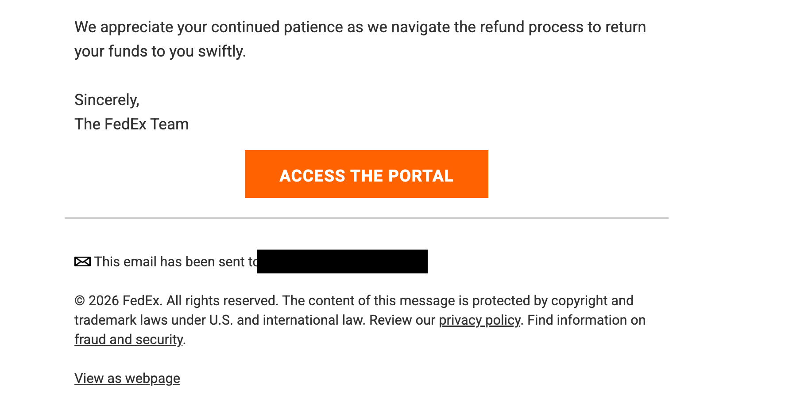

IEEPA関税の返金ポータル案内メール（2026年7月受信）
FedExの名前で下記のメールが届きました。「IEEPA関税の返金を確認するためのポータルサイト」への案内で、ACCESS THE PORTAL（ポータルへアクセス）というボタンがあります。
※ まだボタンは押しておらず、ポータルにもアクセスしていません。ご確認いただいてから対応します。
※ 個人のメールアドレス部分は黒塗りにしています。

1. 冒頭：IEEPA関税の返金に取り組んでいるという説明

2. ポータル公開の案内・データ共有・返金開始時期（8月10日ごろ）

3. CBP（米国税関）の返金フェーズ1〜3の説明

4. 末尾：「ACCESS THE PORTAL」ボタンとフッター
FedExをご利用のお客様へ
私どもは、国際緊急経済権限法（IEEPA）に基づく関税（および発生した米国財務省の利息）を、お支払いいただいたお客様へ可能な限り迅速に返金することに、引き続き全力で取り組んでいます。数百万件に及ぶ通関記録の複雑な照合作業を、お客様の負担なしに安全に管理するため、透明性を高め処理を迅速化する専用の仕組みを開始しました。
新しいお客様向けポータルでは、貨物情報を入力することで、FedExが米国財務省からあなたの返金を受け取っているかどうか（金額・利息・受領日を含む）を確認できます。
ポータル内では、連絡先情報の確認ができるほか、必要に応じて、限定的な貨物・返金データを当社の信頼できる安全な提携業者と共有することに同意（オプトイン）できます。このデータはFedExのデータ保護方針に従って取り扱われ、口座の照合と返金処理の目的にのみ使用されます。
初回の返金は8月10日ごろに開始される見込みです。（注: データ共有への同意を求められたものの同意しないことを選んだお客様にも返金は行われますが、手作業での処理となるため、お届けまでにより長い時間がかかる見込みです。）
CBPは、通関記録の種類ごとに申請可能な段階（フェーズ）を設けているため、返金のタイミングはお客様の貨物の通関状況によって異なります。
| フェーズ1 （進行中） | 米国財務省は、未清算（リクイデーション前）の通関記録および清算から80日以内の記録について、対象となる返金をFedExへ順次送金しています。 |
|---|---|
| フェーズ2 （進行中） | 輸入者が通関時に「照合（reconciliation）」の対象として申告していた記録が対象です。 |
| フェーズ3 （予定・目標は7月31日） | 清算が確定した記録や複雑な記録が対象です。フェーズ3の対象範囲は現在も裁判所の審理中であるため、対象になるかどうかは顧問弁護士とご相談されることを強くお勧めします。 |
返金手続きを進め、皆様の資金を速やかにお返しできるよう努めてまいります。引き続きのご理解に感謝申し上げます。
敬具
FedExチーム
［ポータルへアクセス（ACCESS THE PORTAL）］（ボタン）
このメールは（黒塗りのアドレス）宛に送信されました。
© 2026 FedEx. 無断転載を禁じます。本メッセージの内容は、米国および国際法の著作権法・商標法により保護されています。プライバシーポリシーをご確認ください。詐欺とセキュリティに関する情報はこちら。
| 受信日 | 2026年7月（Gmailで受信） |
|---|---|
| 差出人表示 | FedEx |
| 現在の対応 | ボタンは未クリック・ポータル未アクセス。講師の確認待ち。 |